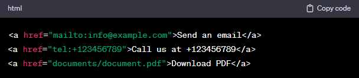

In HTML, you can create links using the < a > (anchor) element. Here's the basic syntax:
Replace "URL" with the actual web address you want to link to and "Link Text" with the text you want to display as the hyperlink. Here's an example:
This creates a hyperlink that, when clicked, will take the user to the "https://www.example.com" website. Additionally, you can use relative paths for internal links within your website. For example:
This assumes that the "page.html" file is in the root directory of your website. If you want to open the link in a new tab or window, you can use the target attribute:
The target="_blank" attribute tells the browser to open the linked page in a new tab or window. You can also link to different types of resources, such as email addresses, phone numbers, or other types of files. For example:
